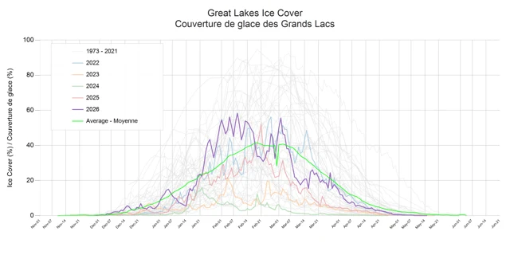

← All programs
C# / Ice coverage charts
Combined Great Lakes — original three-chart generator
The earlier combined-basin generator, retained alongside the later six-lake editions. Produces bilingual, English, and French overlay plots.
Example plot

Run the program
Extract the full ZIP before running. Keep its folder structure and the included CSV files together.
.\OverlayCharts.exeUse the included bas_with_average.csv when prompted. Options include --output-dir, --last-n, and --no-show. PNGs are saved beside the CSV unless an output folder is supplied. This is the original generic version; the later lake-specific C# editions have lake-named executables.
Rerunning replaces output images with matching filenames. Update the CSV copies when new data is available. The webpages document local programs; the programs do not run in your browser.